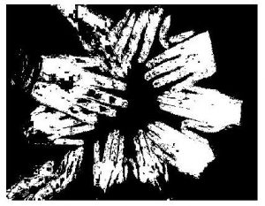
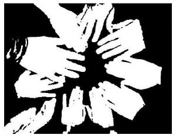

Data publicării: 16.02.2017
Autor articol: Anca Ignat
Detectarea pielii umane este procesul prin care se identifică pixelii și regiunile ce au culoarea pielii umane. Un program ce are ca scop detectarea pielii, transformă fiecare pixel al imaginii ce o primește ca input, într-un spațiu de culoare adecvat procesării acestuia, apoi clasează pixelul ca fiind de culoarea pielii sau diferit de aceasta. Nuanța pielii dintr-o imagine depinde de condițiile de iluminare din spațiul în care aceasta a fost făcută. O mare problemă atunci când vine vorba de procesul de detectare, este reprezentarea culorii astfel încât să nu varieze sau să nu sufere modificări în momentul în care iluminarea se schimbă. O altă dificultate o reprezintă faptul că multe obiecte din mediu pot avea nuanțe identice cu cea căutată. Spre exemplu lemnul, pielea animală prelucrată, hainele în nuanțe apropiate de cea a pielii, părul, nisipul creează rezultate fals pozitive, fiind considerate de orice detector ca zone de piele umană. Această problemă poate fi evitată doar în cazul în care mediul ales pentru fotografiere este controlat. În general, culoarea pielii umane este caracterizată de o combinație de nuanțe de roșu, (datorate vaselor de sânge) și galben cu maro, culori specifice melaninei (pigment natural care dă culoare pielii, părului și ochilor). O proprietate ce face detecția pielii umane posibilă este faptul că nuanța și saturația se încadrează într-un anumit interval pentru toți pixelii de culoarea pielii umane. Pielea mai închisă la culoare conține mai multă melanină, iar cea cu nuanță ușor galbenă este mai saturate [1], [2].
Colorimetria, grafica pe calculator și standardele de transmitere a semnalului video au dus la crearea mai multor spații de culoare cu diferite proprietați. O mare varietate a acestora a fost aplicată pe problema modelării culorii pielii. Deși sunt foarte multe moduri de a codifica culoarea, doar o parte din ele sunt folosite în mod frecvent în modelarea culorii pielii umane. În funcție de spațiul de culoare folosit, nuanța pielii umane este definite de o regiune mai mare sau mai restrânsă din acesta. Această zonă se numește conglomeratul de piele umană.
Un algoritm de detectare a pielii umane are ca rol clasificarea pixelilor în pixeli “piele” și “non-piele”. Un pixel este considerat de culoarea pielii umane, dacă acesta se încadrează în modelul de conglomerat de piele umană din spațiul de culoare ales. În cazul în care pixelul nu face parte din modelul de conglomerat specificat, acesta este considerat non-piele. Având în vedere rezultatele oferite de un detector de piele umană, pixelii sunt clasificați astfel: pozitiv-adevărat, cei care au fost identificați corect ca fiind de culoarea pielii, negativ-adevărat, cei care au fost identificați corect ca fiind non-piele, fals-pozitiv, cei care au fost identificațți greșit ca fiind de culoarea pielii și fals-negativ, cei care sunt de culoarea pielii dar au fost identificați ca non-piele.
Un clasificator bun ar trebui să genereze un număr mic de pixeli fals-pozitivi și fals-negativi. Acuratețea detectorului de piele umană depinde de conglomeratul ales ca reprezentant al pielii umane; dac este ales extins, vor fi puține rezultate fals-negative, dar multe fals-pozitive, în cazul în care se alege un conglomerat restrâns, puțini pixeli vor fi detectați fals-pozitivi, dar mulți vor fi detectați ca fals-negativi.
Spațiile de culoare folosite în detectarea pielii umane sunt: RGB, RGB-normalizat, cele bazate pe Hue-Saturation (nuanță-saturație), TSL, YCbCr, sistemele de culoare perceptual uniforme (CIELAB, CIELUV), YES, YUV, YIQ. Pentru fiecare spațiu de culoare în parte, exista un algoritm optim de detectare a pielii umane astfel încât performanța proceselor și rezultatele oferite de acestea vor fi la fel, deoarece separarea pixelilor în cele două clase, piele umană și non-piele, nu depinde de spațiul de culoare ales. Acest fapt poate fi demonstrat matematic.
Pentru a putea clasifica un pixel ca fiind piele sau non-piele, fiecare detector folosește o regul de decizie. Aceasta constă în introducerea unui system metric ce măsoară distanța dintre culoarea pixelului și nuanța pielii. Tipul acestui sistem metric este definit de metoda de modelare a culorii pielii. O metodă foarte populară de construcție a unui clasificator de piele umană este definirea explicită, printr-un set de reguli, a limitelor conglomeratului de culoarea pielii în spațiul de culoare ales. Ideea principală a metodelor de modelare neparametrică este estimarea distribuției culorii pielii din datele de antrenament fără a crea un model explicit al culorii pielii. Aceste metode au ca rezultat construcția SPM (Skin Probability Map) – asignarea unei valori de probabilitate fiecărui punct dintr-un spațiu de culoare discretizat. Există o multitudine de modele neparametrice ce sunt utilizate pentru crearea clasificatoarelor: LUT (Look Up Table), clasificatorul Bayes, SOM (Self Organizing Maps). Cele mai populare modele neparametrice bazate pe histograme necesită un spațiu foarte mare de stocare, iar performanța lor depinde în mod direct de setul de imagini ales pentru antrenament. Necesitatea reprezentării mai compacte a modelului de clasificare a pielii pentru anuminte aplicații, împreună cu abilitatea de a generaliza și interpola datele de antrenament au stimulat dezvoltarea modelelor parametrice de distribuție a pielii. Aceste modele parametrice sunt cele mai folosite: distribuție gaussiană, combinație de distribuții gaussiene, conglomerate gaussiene multiple, modelul limitei eliptice [3], [4].


Având o gamă largă de modele de creare a clasificatoarelor și foarte multe spații de culoare, se pot dezvolta diverși algoritmi de detectare a culorii pielii umane. În particular, se presupune că fiecare pixel i are asociată o etichetă. Aceasta este o variabilă binară si{0,1} ce specifică dacă pixelul i este de culoarea pielii (si = 1) sau nu (si = 0). În momentul în care algoritmul primește o imagine spre procesare, acesta nu cunoaște în prealabil aceste etichete. Datele de intrare vor fi reprezentate, pentru fiecare pixel i, de un vector de culoare ci = [ri; gi; bi]. În plus, poate exista un model observațional p(ci|si) ce corelează culoarea unui pixel observat și eticheta corespunzătoare acestuia sau se poate crea un astfel de model folosind datele furnizate. Problema detectării culorii pielii umane este reprezentat de modul în care se deduc etichetele pixelilor ascunse din culorile ci ale pixelului observat, ce pot implica sau nu învățarea modelului. Metoda de detectare și segmentare a culorii pielii umane propuse folosește un model cu învățare simultană. Tehnica încorporează restricțiile spațiale în algoritmul EM (Expectation Maximization) cu ajutorul unor calculi adăugate în pasul E al algoritmului EM standard. Rezultatele experimentale arată că această metodă furnizează rezultate mai bune decât metoda de detectare standard.
Algoritmul propus de Javier Ruiz-del-Solar și Rodrigo Verschae [5] prezintă o metodă de detectare a pielii umane din imagini ce îsi bazează decizia în legătură cu clasificarea pixelului dat, dacă acesta este piele sau non-piele și pe informațiile legate de vecinătăți. Această tehnică este reprezentată de un proces de difuzie folosit pentru a determina pixelii de culoarea pielii. Scopul acestui proces nu este doar gruparea pixelilor de culoarea pielii ce se învecinează, dar și determinarea regiunilor de piele unde pixelii prezintă o nuanță de piele uniformă și mai mare decât un prag minim al zonelor unde pixelii din vecinătate au o culoare ușor diferită. Acest proces este controlat folosind trei valori de prag: o valoare pentru a determina dacă un pixel se încadrează ca fiind piele sau nu, o altă valoare pentru a sesiza micile diferențe de culoare a pixelilor din vecinătate și o a treia pentru a determina semințele de la care se va începe procesul de difuzie. Înainte de difuzie, este necesară măsurarea nivelului de apropiere a culorii pixelului de nuanța pielii. Aceast măsurătoare poate corespunde probabilității de a fi un pixel de culoarea pielii atunci când se folosește un model statistic sau un graf de apartenență fuzzy (atunci când se folosește o abordare fuzzy). Deși este folosit un proces de difuzie pentru implementarea segmentării pielii umane, se obține o viteză de procesare destul de mare.
Algoritmul propus de Basilio, Torres, Perez, Medina și Meana [6] bazat pe spațiul de culoare YCbCr are în alcătuirea sa tehnici de procesare a imaginilor, de detectare a culorii pielii umane și de recunoaștere a șabloanelor. Algoritmul urmează o serie de pași bine definiți. În primul rând, imaginea este transformată din spațiul de culoare RGB, în YCbCr pentru a putea determina obiectele din imagine care nu prezintă interes din perspectiva detectării pielii. Următorul pas îl constituie calcularea unei valori de prag utilizată în detectarea culorii pielii umane. Această valoare va fi folosită pentru filtrarea imaginii procesate și recunoațerea porțiunilor de piele. Utilizarea anumitor valori de prag, obținute din datele de antrenament, este o metodă de detectare a culorii pielii umane foarte rapidă și cu rezultate foarte bune. Spațiul de culoare HSV descrie fiecare nuanță folosind valori intuitive, bazate pe percepția umană a culorilor, de Hue, Saturation și Value. Hue definește culoarea predominantă a unei zone (roșu, verde, mov sau galben), Saturation măsoară gradul de colorare al unei zone, în concordanță cu luminozitatea acesteia, iar Value este o valoare legat de proprietatea de intensitate a culorii. O proprietate foarte importantă, ce recomandă acest spațiu de culoare pentru procesul de detectare a culorii pielii umane este reprezentată de faptul că Hue nu variază la schimbări provenite de la o sursă de lumină albă, iar pentru suprafețe mate, aceasta nu își schimbă valoarea în funcție de oscilațiile luminii ambientale sau de schimbarea orientării suprafeței relative la sursa de lumină. Un algoritm ce folosește acest spațiu de culoare necesită, înainte de dezvoltare, găsirea conglomeratului de culoarea pielii umane din spațiul de culoare folosit. Acest lucru este realizat prin crearea unei baze de date formată din imagini de test, cu ajutorul căreia vor fi stabilite valorile de prag. Pentru implementarea acestui algoritm, se poate folosi Matlab, deoarece are inclus un intrument foarte puternic de procesare a imaginilor, sau, pentru alte limbaje de programare (C++, Java, C#, Python) se poate folosi biblioteca OpenCV.
Detectarea pielii umane din imagini are foarte multe utilizări. O aplicație foarte interesantă la care poate folosi acest proces este detecția fețelor din poze. Acest lucru se poate face stabilind procentul de pixeli de culoarea pielii umane din imagine, dimensiunea în pixeli a celei mai mari porțiuni de piele și numărul de zone de culoarea pielii umane conectate. Identificarea poziționătii persoanelor în imagini și a numărului de pixeli de tip piele, poate fi un instrument foarte folositor pentru filtrarea imaginilor ce au conținut pornografic sau nuduri. Poate constitui și unul din criteriile folosite pentru identificarea feței și a caracteristicilor acesteia sau a mâinilor. Culoarea este unul din factorii care pot determina conturul feței sau al mâinii, iar diferitele nuanțe ale acesteia pot conduce la identificarea diverselor trăsături.
Referințe bibliografice
- Vezhnevets, V., Sazonov, V., & Andreeva, A. (2003, September). A survey on pixel-based skin color detection techniques. In Proc. Graphicon (Vol. 3, pp. 85-92).
- Tabassum, M. R., Gias, A. U., Kamal, M., Muctadir, H. M., Ibrahim, M., Shakir, A. K., … & Islam, M. (2010). Comparative study of statistical skin detection algorithms for sub-continental human images. arXiv preprint arXiv:1008.4206.
- Surampalli, G. P., Dayanand, J., & Dhananjay, M. (2012). An Analysis of Skin Pixel Detection using Different Skin Color Extraction Techniques. International Journal of Computer Applications, 54(17).
- Shoyaib, M., Abdullah-Al-Wadud, M., & Chae, O. (2009, September). Adaptive Skin Segmentation Using Color Distance Map. In proceedings of World Congress on Science, Engineering and Technology (Vol. 57, pp. 54-60).
- Ruiz-del-Solar, J., & Verschae, R. (2004, May). Skin detection using neighborhood information. In Automatic Face and Gesture Recognition, 2004. Proceedings. Sixth IEEE International Conference on (pp. 463-468). IEEE.
- Basilio, J. A. M., Torres, G. A., Pérez, G. S., Medina, L. K. T., & Meana, H. M. P. (2011). Explicit image detection using YCbCr space color model as skin detection. Applications of Mathematics and Computer Engineering, 123-128.